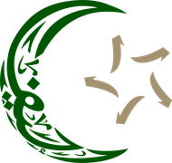

PRIMJER – nisu službena vremena · BEISPIEL – keine offiziellen Zeiten
Nema vaktije za današnji datum.
Keine Gebetszeiten für heute vorhanden – bitte Takvim aktualisieren.
Prijevod · Übersetzung …

UŽIVO · LIVE
Hutba – prijevod
· Predigt – Übersetzung
Prijevod počinje kad imam progovori …
Die Übersetzung beginnt, sobald der Imam spricht …
Automatski prijevod · Automatische Übersetzung – kann Fehler enthalten